每当我们仰望群星璀璨、银汉低垂的夜空，总会由衷地发出“感天地之辽阔、觉宇宙之无穷”的赞叹，心中也会同时涌起对宇宙奥秘求知的渴望。伟大诗人屈原在他的不朽名篇《天问》中，就曾对天问道：
遂古之初，谁传道之？上下未形，何由考之？……斡维焉系？天极焉加？……九天之际，安放安属？隅隈多有，谁知其数？天何所沓？十二焉分？日月安属？列星安陈？……
这一连串的发问，集中反映了亘古以来我们祖先对宇宙之谜不倦的求索。我国古代寓言中“杞人忧天”的故事（“杞国有人，忧天地崩坠、身亡无寄，废寝食者”），如果撇去其“庸人自扰”的贬义，从积极方面来说，也可以说是古代有识之士对宇宙演化结果的一种思考。当然，因为“杞人”只考虑了重力的垂直下落作用并认为宇宙以地球为中心，所以得出了我们今天看来十分荒谬可笑的结论。此外，众所周知，无论在我国还是在西方，众多神话（以及宗教）的产生，都来源于古代先民对壮丽的、既有规律也变幻多端的天象的赞美、恐惧、信服和崇拜。而人类自远古时期就积累起来的对日月运行、昼夜交替、寒来暑往等现象的观察和经验，促使了自然科学中天文学的首先诞生。
按照我国目前的学科分类,天体物理学是天文学下属的一个二级学科,此外的二级学科还有天体测量学和天体力学。天体测量学是天文学最古老的分支,它的主要任务是精确测定天体的位置和运动,建立基本坐标参考系,确定地面点的坐标以及提供精确的标准时间服务。天体力学主要研究天体运动的动力学问题,其理论基础是牛顿力学(在高精度情况下需要应用广义相对论给出修正)。天体物理学的任务是应用物理学的理论、方法和技术,研究天体的形态、结构、化学组成、物理状态和演化规律。实质上，它是天文学和物理学交叉融合的产物，因而既可以说是天文学的一个分支，也可以说是物理学的一个分支。
与早期的天文学不同，天体物理学不仅仅限于测量和记录天体在天空的位置、运动、距离和大小，描述天体的外表形态，而且深入到天体的内部，探求它的结构、化学成分和演化规律，由几何描述到物理描述，由现在的状态推知它的过去和将来。
与我们熟悉的实验室中的物理学不同，天体物理学一般研究的是时间和空间尺度都非常大的宇宙空间中的物理现象，这样大尺度的时空中存在着千差万别的物理条件，有些物理条件是在地球上永远达不到、而且也很难想象的。例如，恒星内部高达 10^{6} \sim 10^{11} K 的高温；中子星内部达 10^{13} \sim 10^{16} g/cm³ 的高密度和表面 10^{12} \sim 10^{14} 高斯的强磁场；能量达 10^{21} \sim 10^{22} eV 的高能宇宙射线；能量达 10^{47} \sim 10^{53} erg 的超新星爆发（其光度可达太阳的 10^{7} \sim 10^{10} 倍），等等。在这些特殊的物理条件下天体会呈现特殊的性质，有些是我们“地球上的物理学”所不了解的。
天体物理学的内容十分丰富——按所研究的宇宙的不同层次，可分为行星物理、太阳物理、恒星物理、星系物理和宇宙学等不同领域；按所接收到的辐射的能量，可以分为射电、红外、光学、紫外、高能（X射线、γ射线）等不同波段；在引力场很强的情况下，要应用相对论天体物理；此外还有：宇宙化学、宇宙生物学、等离子体天体物理、核天体物理、中微子天体物理、粒子天体物理等专门分支。在开始学习课程内容之前，让我们先来对不同层次的天体系统（参见图1.1）做一个快速的巡礼。
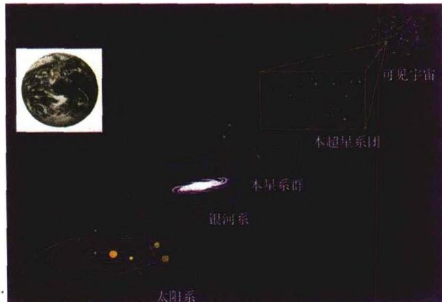
图1.1 宇宙阶梯太阳系是我们最邻近、最熟悉的天体系统，太阳位于这个系统的中心，水星、金星、地球、火星、木星、土星、天王星和海王星这八大行星（包括154颗卫星），以及其他一些小天体（如矮行星、小行星、彗星等），围绕太阳不停地运转。太阳与八大行星的位置关系及大小比较见图1.2。
太阳到地球的距离被定为一个天文单位(1 AU)，它的数值大小是
1 \mathrm{AU} = 1 4 9 5 9 7 8 7 0 \mathrm{km}\tag{1.1}
常近似取为1.5亿km。这段距离光要走8分19秒，而从太阳到原属于九大行星之一的冥王星，光要走5小时24分，相应的距离约为39个天文单位或59亿km。引人注目的是，八大行星的轨道几乎都位于同一平面上。形象地说，如果把太阳系的大小设为一米，则这八大行星的轨道平面相互之间的最大偏离不超过2cm。而冥王星的轨道平面有较大的倾斜，大约为17°。
太阳 是太阳系中唯一的一颗恒星, 即依靠自身热核反应产生能量的天体。它的直径约为 140 万 km, 质量 2 \times 10^{33} g,
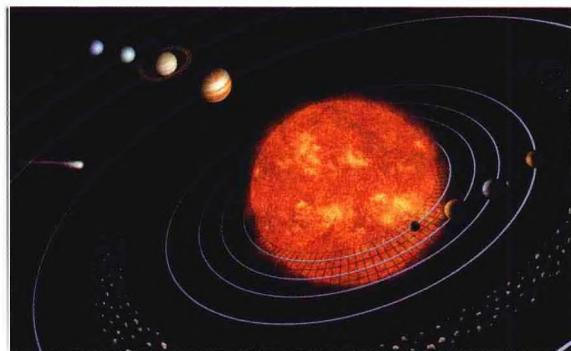
图1.2a 太阳系家族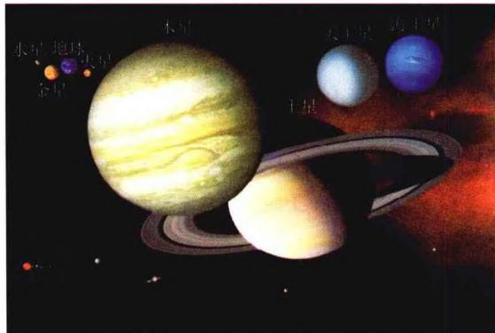
图1.2b 八大行星大小的比较占整个太阳系总质量的 99.86\% 。太阳的化学成分主要是氢，占质量的 71\% ，其次是氦，占质量的 27\% 。其他元素总共只有 2\% ，主要为碳、氧、氮和各种金属。太阳的平均质量密度约为 1.4 \mathrm{~g} / \mathrm{cm}^{3} ，比水的密度略大一些。通常我们直接观测到的是太阳的大气层，它从里向外分为光球、色球、日冕三层。虽然就总体而言，太阳是一个稳定、平衡、发光的气体球，但它的大气层却处于局部的激烈运动之中。最明显的例子是标志太阳活动区生长和衰变的黑子群的出没、日珥(图1.3a)的变化、耀斑的爆发等。此外，我们还看到不断运动和变化着的米粒组织、谱斑、色球网络、针状物、喷焰、冲浪等。太阳周围的空间也充满了从太阳中喷射出来的剧烈运动着的气体和磁场，其影响范围一直延伸到太阳系边缘。我们所观测到的上述所有太阳活动现象，都是太阳磁场同这些区域内的等离子体相互作用的结果。特别重要的是，太阳向行星际空间不断抛射高速粒子流，最远可达距太阳100个天文单位，这就是太阳风。地球轨道附近太阳风的风速约为450 km/s，所含粒子数密度为1～10 cm ^{-3} 。当这些粒子中的少数穿过地球的磁层屏障而到达两极上空时，与电离层中的原子发生碰撞，就形成壮丽的极光。太阳活动和太阳风对地球上的通讯、无线电导航、气象预报以及空间飞行安全等都有重要影响，因此对太阳活动和太阳风的研究越来越受到各国的高度重视。
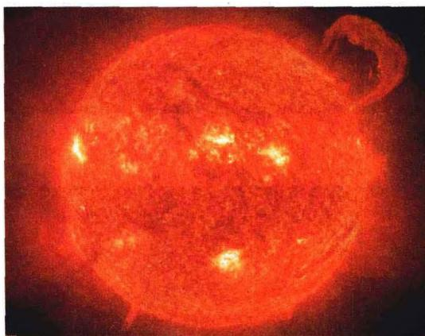
图1.3a 太阳表面及巨大的日珥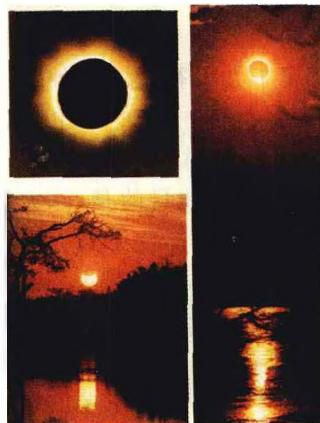
图 1.3b 1980 年发生在 我国云南地区的日全食水星是最靠近太阳的行星，公转周期约88天。它与太阳的线距离大约为0.4 AU，角距离最大不超过28度，所以很难观测到。它的体积在太阳系大行星中是最小的，赤道半径仅为2440 km，只比月球大40%，甚至比木星的卫星木卫三(Ganymede)和土星的卫星土卫六(Titan)还要小。从“水手10号”探测飞船发回的图片上(见图1.4)可以看到，水星表面是一个类似月球表面的世界，尘埃覆盖着陨石撞成的起伏山峦，几公里高的断层悬崖绵延数百公里，到处是大大小小的陨石坑。由于没有足够的大气来散射阳光，天空通常都是漆黑一片。水星表面白天气温非常高，平均地表温度为179℃，最高为427℃，最低为零下173℃，因此看来不
可能有水存在。
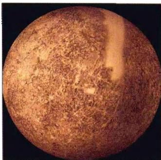
图1.4a 水星表面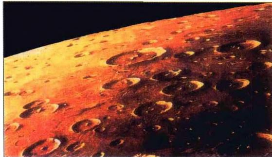
图 1.4b 水星向阳面照片金星 中国古代称为“启明”（晨星）和“长庚”（昏星），西方则称为“爱神星”。它与太阳的平均距离约为0.7 AU，绕日公转周期约为225天。金星的直径、密度都与地球相近，又有浓密的大气层，因此以往有地球的“姐妹星”之称。但人们对金星的真正了解却始于20世纪60年代的雷达探测之后。金星的大气十分浓密，几乎是地球的100倍，表面的气压高达88个大气压。大气主要成分是 CO_{2} （96%以上）、 N_{2} （3.5%），此外还有 SO_{2} 、CO、HCl、HF、 H_{2}SO_{4} 等等。金星大气也有明显的分层，近表面32 km内是一层透明洁净的大气，往上到48 km是一层浓雾区，从48～70 km则是一层终年不散的厚云区，它使人无法看到金星的表面。70 km以上则是薄雾区。1974年，“水手10号”拍得了很有特征的“Y”形云，那里的云层平均4天绕金星一圈，而近表面的大气几乎是宁静的。雾层中主要成分是浓度很高的硫酸雾滴。金星大气中有频繁的放电现象，平均每分钟20次。因为有浓密大气的保护，金星表面少有陨星撞击的痕迹，它的地形与地球类似。1972年，“金星8号”飞船成功地降落在金星表面，首次发回金星地面的照片。金星表面起伏不大，60%的地区比较平坦，北半球有个长3200 km，宽1600 km的大高原。最高的麦克斯韦山高11000 m，著名的金星大峡谷宽280 km，深3 km，全长达2250 km。赤道区域有些大而浅的圆形圈，可能是火山口。金星没有磁场和磁层以及辐射带，因此形成了一个离金星表面很近的薄薄的电离层。还有一个奇特之处是，金星自转方向是自东向西逆转，这是太阳系大天体运转“同向性”的唯一例外，可能是在金星演化的过程中，受到一个大星体的猛烈撞击。
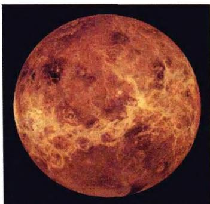
图 1.5a “水手号”行星际 探测器拍摄的金星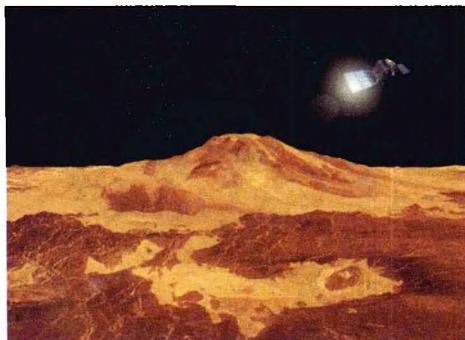
图 1.5b “金星快车” 及其描绘的金星地貌地球 是太阳系中唯一一颗表面大部分被水覆盖的行星,也是目前所知唯一一颗有生命存在的星球。蔚蓝色的海洋,红黄棕绿黑的五色陆地,葱郁的森林以及天空中漂浮的朵朵白云,这就是我们人类世代繁衍生息的美丽家园。地球的半径约6400 km,由地壳、地幔和地核构成。地壳厚度不一,平均厚度约17 km。上层为花岗岩,下层为玄武岩。地球内部的温度和压力随着深度加深而增加。地幔厚度约2900 km,上地幔主要是橄榄石,下地幔是具有一定塑性的固体物质。地核的平均厚度约3400 km,外核是液态的,可流动;内核是固态的,主要由铁、镍等金属元素构成。中心密度为13 g/cm³,温度最高可达5000 ℃左右,压力最大可达370万个大气压。在地球强大的引力作用下,大量气体聚集在地球周围,形成数千公里的大气层。大气中氮占78%,氧占21%,氩占0.93%,二氧化碳占0.03%,氖占0.0018%,此外还有水汽和尘埃。由于太阳不停地发出带电粒子(即太阳风),这些粒子被地球磁场俘获,就在地球上空形成一个带电粒子带,称为地球辐射带。辐射带从四面把地球包围了起来,而在两极处留下了空隙,也就是说,地球的南极和北极上空不存在辐射带。当太阳风到达地球附近空间时，太阳风与地球的偶极磁场发生作用，把地球磁场压缩在一个固定的区域里，这个区域就叫磁层。地球的磁层好像一道防护林，保护着地球上的生物免受太阳风的袭击。
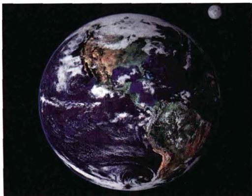
图1.6a 地球与月球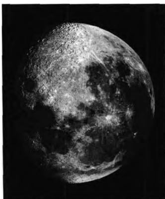
图1.6b 月球表面作为地球最近的伴侣，月球距离地球大约384 000 km，它的半径为1 738 km，质量约为地球的1/81。月球表面的重力仅有地球表面重力的1/6，这使得气体很容易逃逸到太空，所以月球没有大气。众所周知，月球上没有水，也没有任何生命存在。
火星是一颗引人注目的火红色星，在古罗马神话中，它被比喻为身披盔甲浑身是血的战神Mars。它绕太阳公转的轨道半长径为1.5AU，周期为687天，接近地球上的两年。火星表面的土壤中含有大量氧化铁，由于长期受紫外线的照射，铁就生成了一层红色和黄色的氧化物。由于火星距离太阳比较远，所接收到的太阳辐射能只有地球的 43\% ，因而地面平均温度大约比地球低30多摄氏度，昼夜温差可达上百摄氏度。在火星赤道附近，最高温度可达 20^{\circ}\mathrm{C} 左右。火星上也存在大气。其主要成分是二氧化碳，约占 95\% ，还有极少量的一氧化碳和水汽。火星比地球小，赤道半径为 3395\mathrm{km} ，是地球的一半，体积不到地球的1/6，质量仅为地球的1/10。火星的内部和地球一样，也有核、幔、壳的结构。火星的自转周期和地球十分相近，自转一周的时间为24小时37分22.6秒。公转一周约为687天，即火星的一年约等于地球的两年。火星只有两个卫星，即火卫一和火卫二。
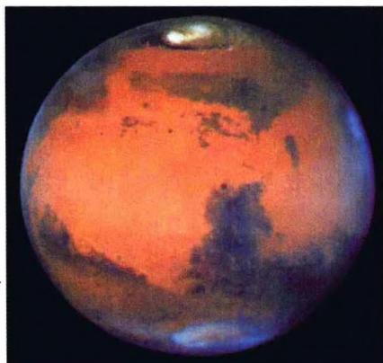
图 1.7a “哈勃”拍摄的火星图 1.7b “海盗 2 号”火星车 拍摄的火星表面
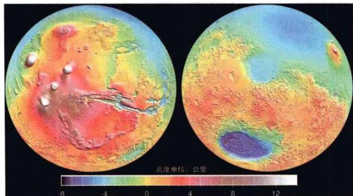
图 1.7c 计算机合成的火星表面地形图小行星带 在火星和木星轨道之间，约有50万颗沿椭圆形轨道绕太阳运行的小行星。它们一般无法被肉眼看到。1801年1月，意大利天文学家在这些小行星中发现了谷神星(图1.8a)，其外形几乎为球体，直径1025 km，在小行星中排名第一。接下来是智神星(588 km)、灶神星(576 km)、健神星(430 km)等，直径超过100 km的估计约有200颗，超过30 km的约有1000颗。但所有的小行星质量加在一起，还不到地球质量的1/1000。小行星带分布在距太阳2.2~3.4 AU处，宽度约2亿 km。大多数小行星形状很不规则（例如图1.8b所示的爱神星，长度为34 km），表面粗糙、结构松散，以硅酸盐石块为主，少数含有较多的金属成分。
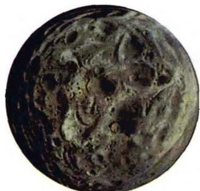
图1.8a 谷神星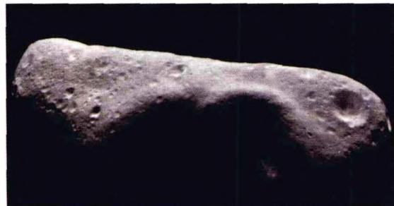
图 1.8b 第 433 号小行星爱神星木星 轨道半长径为 5.2 AU，公转周期是 11.9 年。它在八大行星中是最大的一个，其赤道半径为 71400 km，为地球的 11.2 倍；体积是地球的 1316 倍，质量为地球的 318 倍，是其余七大行星质量之和的 2.47 倍。但这一质量在其中心所产生的温度和压力还不足以点燃热核反应，所以木星本身不能够发光而成为恒星。木星的表面被深度达 5 万多 km 的液态氢的海洋所覆盖，海洋上空有浓密的大气层。木星表面标志性的大红斑就是大气层中的一个巨大旋涡，它的宽度达数万公里，自发现至今已 300 多年未见消减。根据最新的数据，木星共发现有 63 颗卫星。
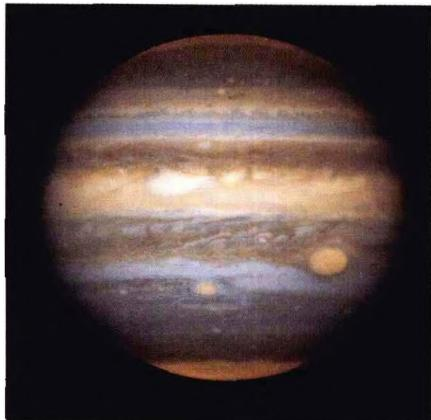
图 1.9a 哈勃望远镜拍摄的木星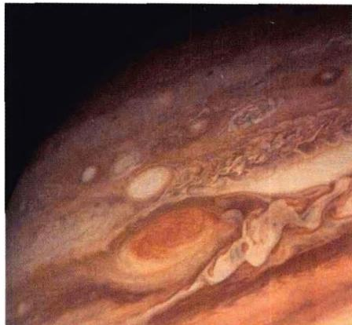
图 1.9b “旅行者 1 号” 拍摄的木星“大红斑”土星 轨道半长径为 9.6 AU，绕日公转周期为 29.5 年。最显著的特征是它美丽壮观的光环。在大望远镜中观看，光环就分解为无数大大小小的石块。土星表面呈淡黄色，有平行于赤道的永久性云带，但不如木星上的显著。土星上盛行强风，在赤道附近，风速约为每秒 500 m。在高纬度，风速逐渐递减。土星的平均密度只有 0.7 \, g/cm^{3} ，是八大行星中密度最小的，也是太阳系中唯一比水轻的行星。在八大行星中，土星的大小和质量仅次于木星，占第二位，其大气主要由氢、氦、甲烷和氨组成。到目前为止，发现的土星卫星数目共有 48 颗。
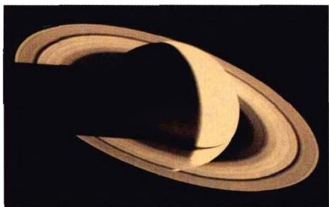
图1.10a “旅行者2号”拍摄的土星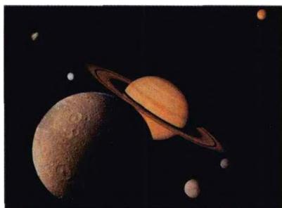
图 1.10b “旅行者 1 号”拍摄的 土星及其卫星的照片组合天王星 距太阳 19.3 AU, 约 29 亿 km, 肉眼已无法看到, 是 1781 年英国天文学家威廉·赫歇尔 (W. Herschel) 用他自己制造的望远镜发现的。公转周期为 84年。天王星的赤道半径约 25 900 km，体积约为地球的 65 倍，在八大行星中仅次于木星和土星。天王星的大气层中 83% 是氢，15% 为氦，2% 为甲烷以及少量的乙炔和碳氢化合物。上层大气层的甲烷吸收红光，使天王星呈现蓝绿色。大气在固定纬度集结成云层，类似于木星和土星在纬线上鲜艳的条状色带。天王星密度较小，只有 1.24 \, g/cm^{3} ，在太阳系八大行星中，它的质量仅次于木星，土星和海王星，占第四位。天王星有 27 颗卫星，还有很薄的一层光环。
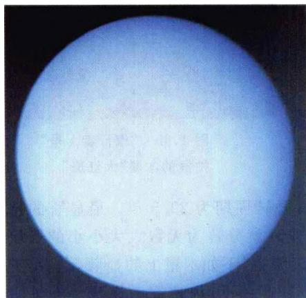
图 1.11a 天王星(“旅 行者 2 号”拍摄)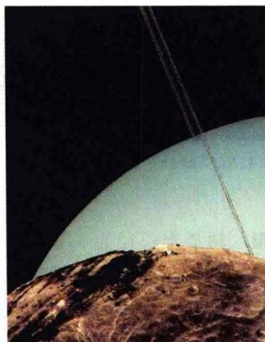
图1.11b 从天卫五 看天王星海王星 是通过它对天王星轨道的摄动作用而于 1846 年被发现的, 这一发现被看成是牛顿万有引力理论伟大成功的一个范例。海王星绕太阳运转的轨道半径为 30 AU, 约合 45 亿 km, 公转一周要 165 年。由于距离遥远, 即使用大型望远镜也难看清其表面细节。海王星的直径为 49400 km, 是地球的 3.88 倍; 体积约为地球体积的 57 倍, 质量为地球质量的 17 倍, 平均密度为 1.7 \mathrm{~g} / \mathrm{cm}^{3} 。它的大气中含有丰富的氢和氦, 云层的平均温度为零下 193^{\circ} \mathrm{C} 至零下 153^{\circ} \mathrm{C} 。海王星有 13 颗卫星, 5 条光环。由于海王星是一颗淡蓝色的行星, 人们根据传统的行星命名法, 称其为 Neptune。Neptune 是罗马神话中统治大海的海神, 掌握着三分之一的宇宙。
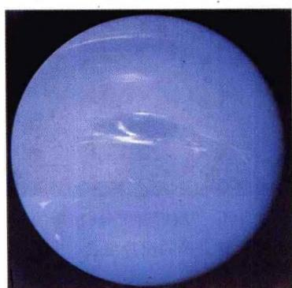
图1.12a 海王星全貌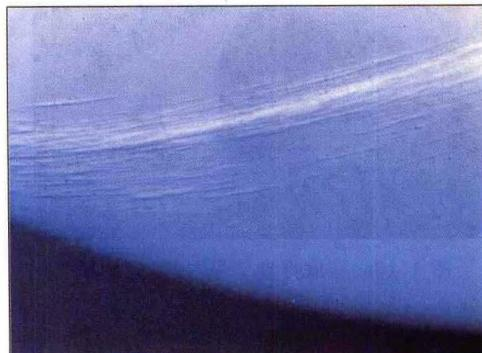
图1.12b “海王云”2006年8月24日之前，冥王星也曾经是太阳系的九大行星之一。冥王星是在1930年被发现的，它在远离太阳59亿km的寒冷阴暗的太空中跚跚而行，这情形和罗马神话中住在阴森森的地下宫殿里的冥王Pluto非常相似，因此，人们称其为Pluto。冥王星的直径约为 2300\mathrm{km} ，质量是地球质量的0.0024倍，不仅比水星质量小，甚至比月球质量还小。由于冥王星个头太小，轨道偏心率太大，而且轨道平面相对于地球轨道平面有很大倾斜，不像其他行星轨道基本上与地球轨道位于同一平面中，这些特征长期以来使其行星地位相当不稳定，总有人认为应该把它开除出行星家族。近几十年来陆续发现的许多柯伊伯带天体，使这个问题进一步激化。
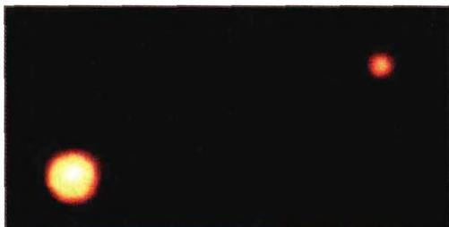
图 1.13a “哈勃”拍摄的冥王星及其卫星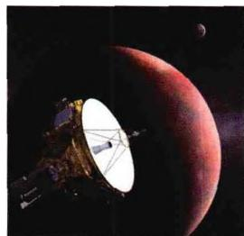
图 1.13b 2006 年 1 月发射的 “新视界” 空间飞船，将经过约 9 年的飞行到达冥王星。图为 “新视界” 到达冥王星时的想象图柯伊伯带(Kuiper belt) 是比冥王星绕太阳轨道更远的一个带状区域。专家们认为彗星等小天体就是从这里起源的。早先的天文观测表明，柯伊伯带中存在着大量由冰和岩石组成的天体，可能是太阳系早期物质形成行星之后的剩余材料。第一个柯伊伯带天体于1992年被发现，现在其家族成员已经增加到几百个。从2000年起，柯伊伯带天体直径最大记录不断被刷新。2004年，当一个叫“塞德娜”的天体以直径1700 km的大小直逼冥王星时，情况已经变得十分严峻。于是，国际天文学联合会成立了一个专门委员会来重新讨论行星的概念，看看是把这些新发现的大天体接纳进行星家族，还是索性剥夺冥王星的行星地位。
2003年，美国加州理工学院的天文学家布朗在太阳系边缘发现了一颗天体，将其暂时编号为“2003UB313”。2005年7月，布朗正式宣布了这一发现，并称该天体为“齐娜”（神话中的一个好战女神）。这颗天体位于冥王星轨道以外的柯伊伯带中，距离太阳约160亿km，表面温度达零下248摄氏度。哈勃太空望远镜的观测显示，“齐娜”的直径可能达2400km，比冥王星大100km左右，而且有人认为，它可能还有一颗卫星。这是推动行星概念被重新定义的决定性发现：事情已经到了非解决不可的程度。
根据国际天文学联合会大会2006年8月24日通过的新定义，“行星”指的是“围绕太阳运转、自身引力足以克服其刚体力而使天体呈圆球状、并且能够清除其轨道附近其他物体的天体”。按照这一新的定义，太阳系行星现只包括水星、金星、地球、火星、木星、土星、天王星和海王星，它们都是在1900年以前被发现的。根据新定义，具有足够质量、呈圆球形，但不能清除其轨道附近其他物体的天体被称为“矮行星”。因此，冥王星现在是一颗矮行星。冥王星的卫星卡戎（Charon）、小行星带中的谷神星和柯伊伯带中的齐娜(2003UB313)也是矮行星。所有其他围绕太阳运转但不符合上述条件的物体被统称为“太阳系小天体”。
太阳及其行星是约50亿年前，由星际物质云在自引力作用下逐渐收缩形成的。有人认为，由于太阳比许多其他恒星包含更多的重元素（例如铁），由此可以推知太阳是第二代恒星，即形成太阳的气体云中包含着上一代恒星演化终结后抛散到宇宙空间的遗迹。目前的太阳已经维持了大约50亿年左右。在它的氢燃料耗尽之后，将由氦的核反应继续维持其能源。在此过程中，它将从目前的黄矮星逐渐转变为红巨星，然后再转变为红超巨星，届时它的燃烧气壳将吞没整个火星轨道。在所有的核能源都用完之后，太阳内部将没有新能源来抵御引力坍缩，这就会使它的半径大大缩小，密度大大增加，从而变成白矮星，并进一步缓慢变为一颗不发光的冷“黑矮星”。它的生命就终止了，这也就意味着太阳系的生命终止了。从诞生起到最后，太阳的寿命估计总共可达100亿年。
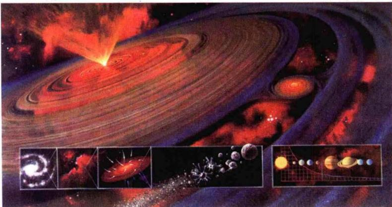
图1.14 艺术家描绘的太阳系的形成图晴朗无月的夜空，繁星点点的天幕上，除了水、金、火、木、土五大行星，以及偶尔出现的彗星、快速移动的人造天体和划空而过的流星之外，我们肉眼可见的发光天体都是恒星。每晚可以看到大约3000颗恒星。随着地球绕日运动引起的斗转星移，我们一年之中肉眼总共可以看到大约6000颗恒星。而在望远镜中看来，疏朗的星空就立即展现为千千万万颗恒星构成的色彩斑斓、广袤深邃的恒星世界。
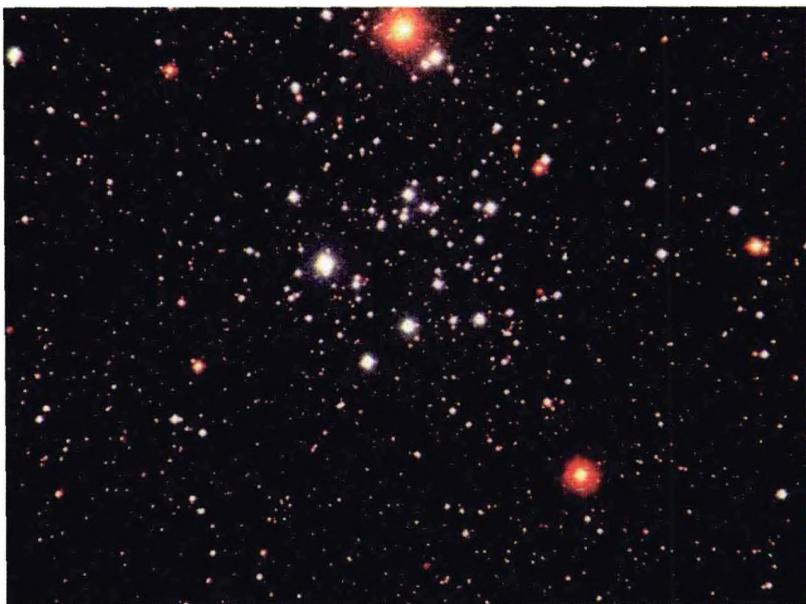
图1.15 恒星世界恒星在天空上的位置以及颜色亮度千百年来变化很小，所以才称为“恒”星。人们熟悉的“星座”（图1.16），就是古希腊人为描述恒星位置而划分的天空区域，共有88个。它们以希腊神话中的人物或动物命名，其中南天的一些星座是17世纪环球航海以后才取名的。中国古代的恒星命名方法是将星空分为若干星官。北极附近的一些星官分属三垣：紫微、太微和天市。沿黄道的28个星官称为二十八宿（音xiù），并把它们按东西南北四个方向分别划归为苍龙、白虎、朱雀、玄武四象。
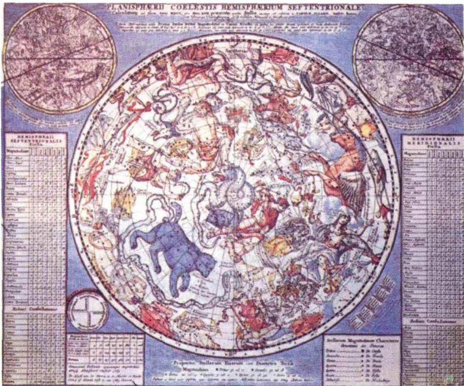
图1.16 星座图恒星之间的距离要以光年来计，
1 \mathrm{光年} \simeq 9. 4 6 0 \times 1 0 ^ {1 2} \mathrm{km} \simeq 6. 3 \times 1 0 ^ {4} \mathrm{AU}\tag{1.2}
由于距离遥远，甚至在大型望远镜中，恒星也呈现不出行星那样的圆面，更不用说表面的细节了。但是，如我们在下一章中将要讲述的，现在已有许多办法可以定出恒星的大小、质量、化学成分等内禀特征，甚至定出恒星的年龄。在这些恒星中，有体积比太阳大数亿倍乃至百亿倍的超巨星，也有直径仅约 10\mathrm{km} 的中子星；有光焰四射、辐射总能量相当于一个星系的超新星，也有暗淡无光、垂垂迟暮的黑矮星。我们将会看到，恒星半径可以相差 10^{6} 倍、固有亮度（光度）可以相差 10^{10} 倍、密度可以相差 10^{25} 倍，但恒星的质量大小相差只在 10^{3} 倍以内。质量大小的差异造成自身引力大小的差异，而正是引力主导了恒星一生的演化，这就使得不同质量的恒星走过完全不同的演化途径，并到达有着天壤之别的最后归宿。
尽管恒星是构成宇宙结构的最基本组元，但恒星通常总是集结成团，最普遍的恒星集团就是星系。我们肉眼可见的恒星都属于银河系，这是一个拥有千亿颗恒星、大小为10万光年的旋涡星系，太阳只是其中一颗普通的恒星，距离银河系中心约3万光年。星系的世界更是一个姿态万千的世界，除了旋涡星系之外，还有椭圆星系和形态各异的不规则星系。与恒星的情况类似，星系之间也相互集结，形成由小到大的逐级成团结构。例如我们的银河系以及其他几十个星系组成本星系群，尺度约为300万光年；本星系群再和室女团、大熊星系团等其他几十个星系团一起构成本超星系团，尺度为数亿光年，等等。我们至今所看到的全部宇宙称为总星系，它的典型尺度为100亿光年，年龄为100亿年数量级。
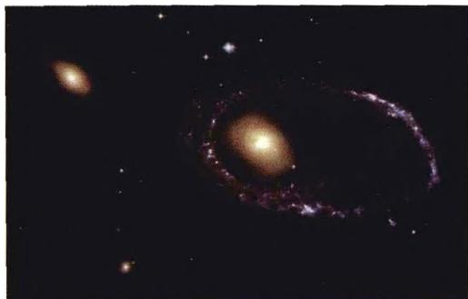
图 1.17a 哈勃望远镜的“生日礼物”——发射 14 周年 (2004 年) 纪念日当天拍摄到的“珍珠项链”星系, 它距离地球 3 亿光年, “项链”由无数蓝色恒星组成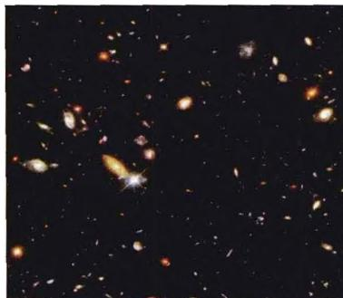
图1.17b 哈勃望远镜拍到的宇宙深空照片，其中每个天体都是一个星系